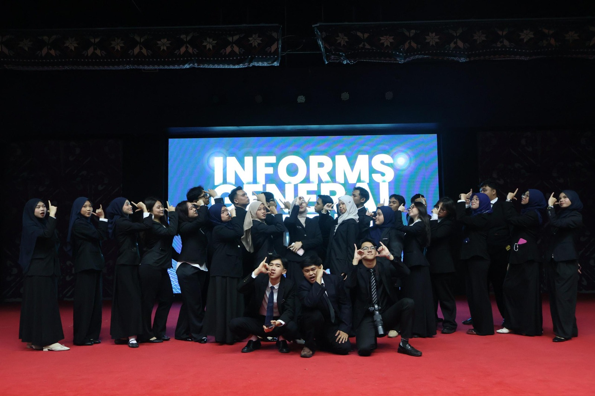

HIS JOURNEY
A path shaped by effort.
-
SMK LUTONG
School Student
Built his foundation in academics, responsibility and participation in school life.
-
SMK LUTONG
School PRS Prefect
He learned how to lead, manage responsibility and contribute to a disciplined school environment.
-
SMK LUTONG
School PRS Prefect Secretary
He developed organisation skills and gained exposure to responsibility in a practical setting.
-
SMK LUTONG
School rugby and district involvement
He represented his school and later took part in Miri district rugby participation, which strengthened teamwork, discipline and resilience.
-
SMK LUTONG
100m sprint achievement
He earned third place in the Men’s Under-19 100-metre in school sports event, which improved his discipline and determination.
-
2024–Now
Diploma in Information Management
He Now Studying at UiTM Kota Samarahan and building his knowledge in information management, records and digital processes.
-
ONngoing University activity
INFORMS Majlis Tertinggi
He Continued building leadership and organisational experience while contributing to university involvement.
-
Community
Miri Handcraft Centre volunteering
He Took part in Community Service Engagement with Pustaka and gained wider perspective about service, teamwork and responsibility.
-
Ongoing
Exploring web development
He Building his knowledge of HTML, CSS and JavaScript while developing digital and creative skills for the future.

